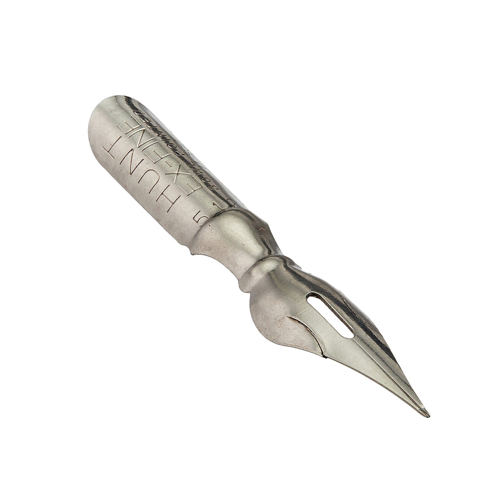

Перо Speedball 512F
Описание товара

Универсальное перо для художественных работ
Характеристики товара
- Производитель - Speedball
- Цвет - серебряный
- Материал - сталь
- Стиль держателя - стандартный
- Длина - 3,9 см
- Ширина - 0,6 см
- Вес - 1 гр.
Подробное описание товара
Универсальное перо для художественных работ — рисования, скетчинга, штриховки, черчения, леттеринга и каллиграфии в стиле остроконечного пера Speedball Hunt Artists’ Pen 512. Размер пера F (fine). Перо достаточно жесткое, но за счет разного нажима может варьировать толщину линий. Перо можно использовать с любым универсальным держателем для перьев. Перо можно обмакивать в чернила или тушь.Перед первым использованием производитель рекомендует промыть перо с водой и обычным мылом, а затем просушить, чтобы удалить следы защитной смазки.